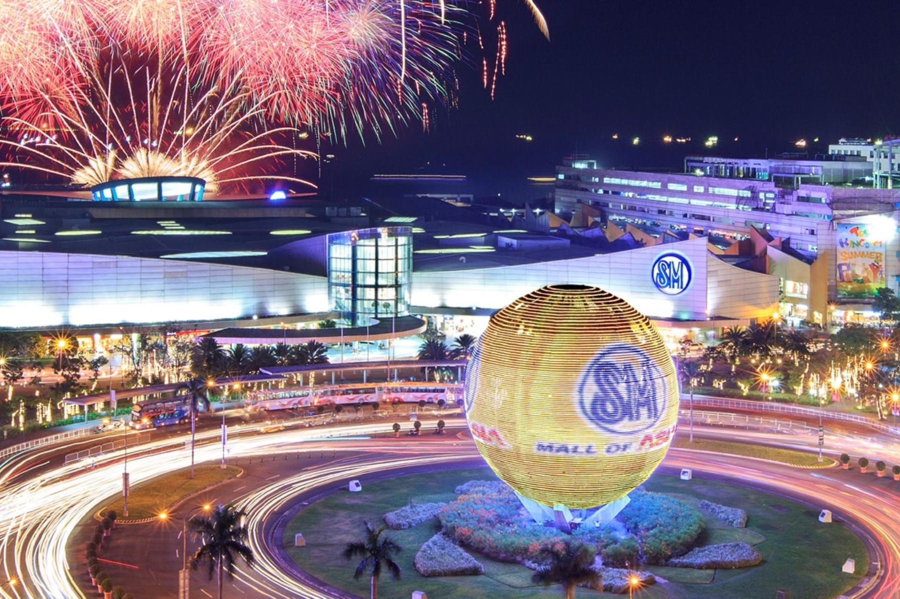

Manila, known as the “Pearl of the Orient”, is the nation’s capital
city. This bustling historic city is full of things to see and do —
including museums, parks, theaters, shopping malls and a plethora of
restaurants to choose from. The Philippines is quickly becoming a
destination for foodies, and Manila is well known for its varied
cuisine and street food markets, like the Legazpi Sunday Market,
Quiapo Market, and the country’s very own Chinatown, Binondo.
Shopping in Manila
The Philippines is one of the popular tourist destinations known for
its beaches, forests, islands, mountains and much more. The country is
also famous for its unique style and fashion. The City of Manila has
an eclectic mix of buildings and an Americanised-southeast Asian
lifestyle. This cosmopolitan city is known for its shopping malls,
market, outlets, departmental stores and many more.

Visit the Manila Board Walk
The waterside promenade on Manila Bay is special in the evening when
you can watch the sun go down. Those gleaming waters were the scene
for the Battle of Manila Bay between the United States Navy and Spain
in 1898, which ended in a decisive American victory and brought the
curtain down on the more than 300 years of Spanish rule. The Baywalk
is two kilometres from the American Embassy down to the Cultural
Center of the Philippines and has a line of palms buffering it from
the busy Roxas Boulevard. Across the road are skyscrapers, and as you
get down to the Manila Yacht Club there’s a precinct with cafes and
restaurants. This is a genial little area, with live music street
performers and food vendors.